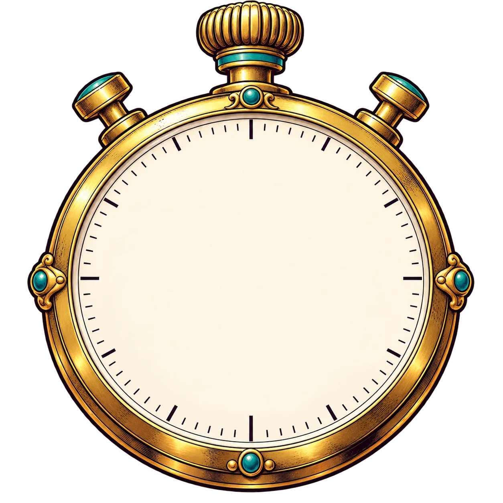

✦ L’HISTOIRE SE JOUE À UNE ANNÉE PRÈS.
Vise juste.
Frappe pile.
Une année à trouver. Un chrono impitoyable.
Et un marteau qui ne mâche pas ses mots.
256événements
65 spour viser juste
1–8joueurs
À VOUS DE JOUER
Choisis ton aventure !
Seul face à l’histoire : vise le meilleur score !
PLUS ? MOINS ?Affine ta réponse. Chaque indice coûte 500 pts.
Années uniquement · Souris, tactile ou clavier
01 Lis l’événement02 Propose une année03 Ajuste… ou garde ta réponse !
65 secondes + bonusLe chrono démarre après l’arrivée de la question.
À L’ANNÉE PRÈS
POINTS DU CHRONO20 00020 000 → 2 000

65.0SECONDES
EN QUELLE ANNÉE…Événement daté approximativement : vise l’année de référence.
− MOINS− : 0
À TOI DE VISER
?
L’histoire attend ta réponse.
+ PLUS+ : 0
0 brique · 0 ptAucune réponse enregistrée
TON ANNÉE
PROCHAINE PROPOSITIONaprès J.-C.
Prépare-toi…
Chiffres + Entrée au clavier · Échap pour effacer
Points du chrono 0
Briques utilisées 0
Bonus de proximité 0
Bonus TOUT PILE !0
SCORE DE LA MANCHE0POINTS
Garde ce résultat pour toi jusqu’à la fin de la manche.
LA TROUPE A ÉCRIT L’HISTOIRE